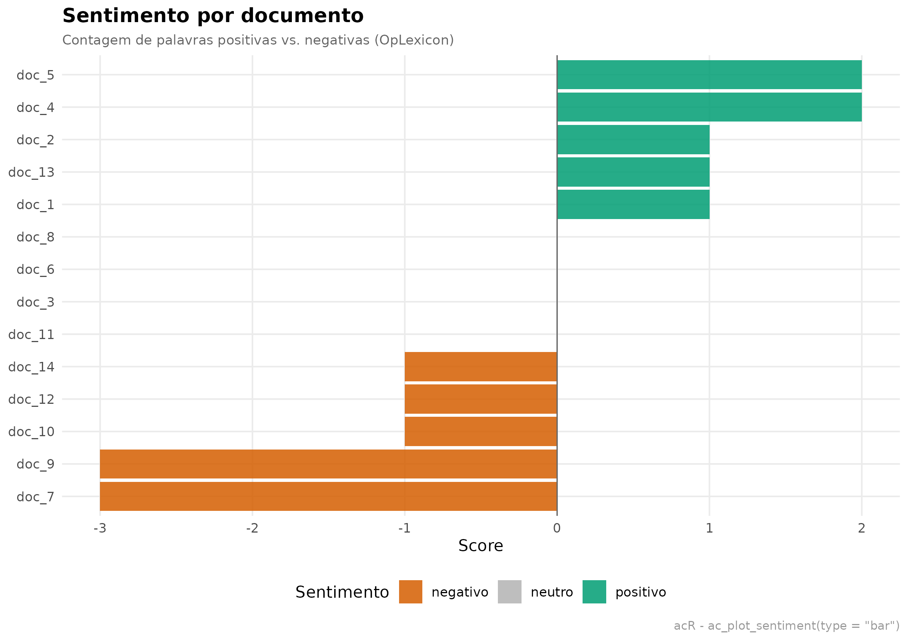
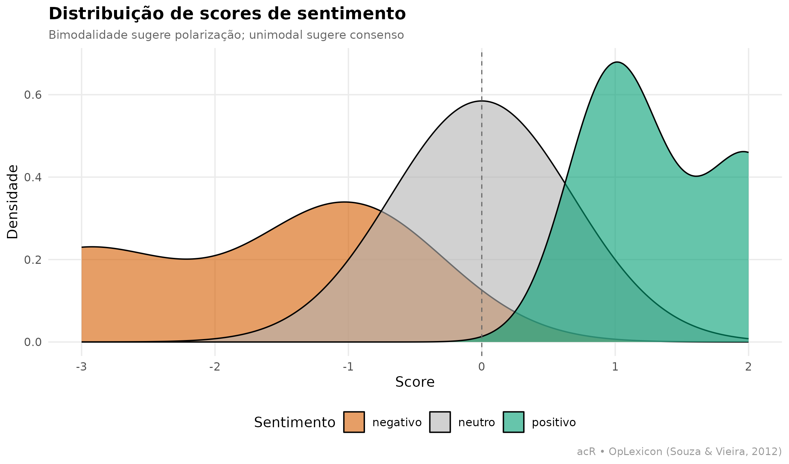
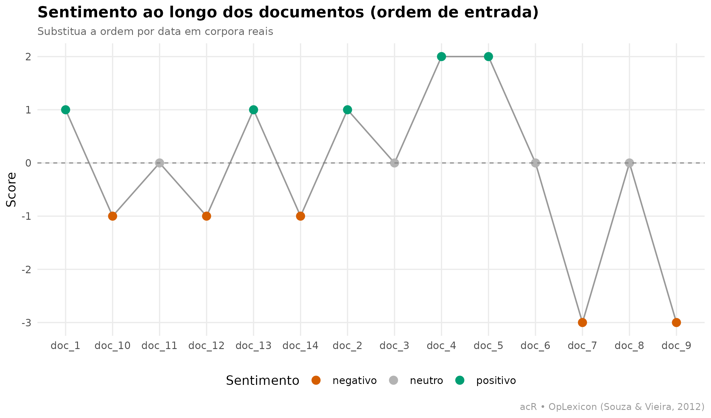
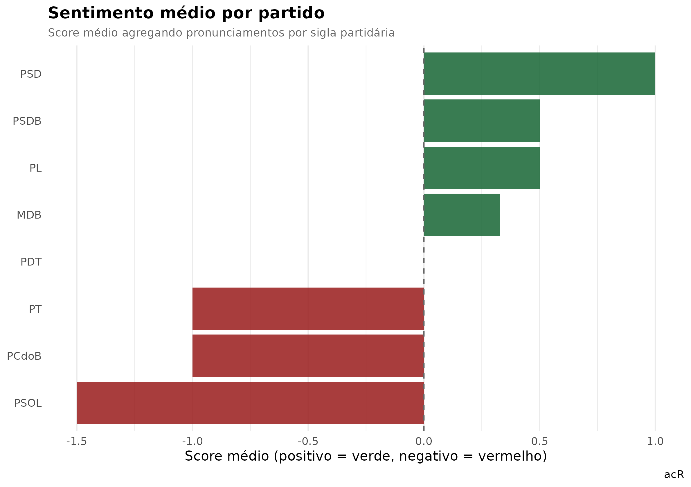
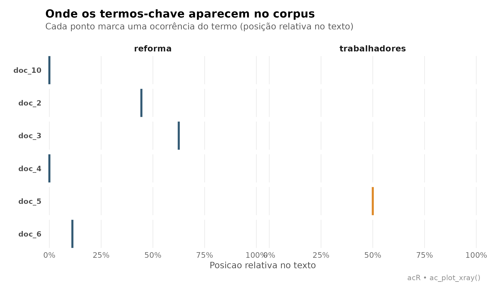

O que é análise de sentimento com léxico
Análise de sentimento baseada em léxico classifica textos em positivo, negativo ou neutro contando palavras de listas curadas: palavras que carregam valência positiva (excelente, aprovar, conquista) contra palavras de valência negativa (péssimo, fracasso, retrocesso).
O acR usa por padrão o OpLexicon (Souza
& Vieira, 2012), o mais usado para português brasileiro, com cerca
de 30 mil palavras rotuladas.
Quando usar léxico vs. LLM?
| Cenário | Léxico | LLM |
|---|---|---|
| Sinal grosso em milhares de docs | ✅ | ❌ caro |
| Ironia, sarcasmo, contexto | ❌ | ✅ |
| Sem chave de API, sem rede | ✅ | ❌ |
| Precisa reprodutibilidade exata | ✅ | ⚠️ estocástico |
| Documentos muito curtos (tweets) | ⚠️ | ✅ |
Regra prática: use léxico para panorama rápido e
filtragem de casos extremos, depois use codificação
qualitativa (via ac_qual_code()) na amostra que
interessa.
1. Corpus: pronunciamentos sobre uma reforma polêmica
Corpus fabricado de 14 pronunciamentos, com metadados de partido e
posição declarada. Serve para exercitar visualizações; em corpora reais,
substitua pela coleta via ac_fetch_camara() ou
ac_fetch_senado().
textos <- c(
# Favoráveis
"Excelente proposta que moderniza o sistema e protege as geracoes futuras.",
"Aprovamos com convicção esta reforma responsável e necessária ao país.",
"Vitória histórica para a economia: reforma corrige distorções antigas.",
"Reforma equilibrada garante sustentabilidade fiscal e futuro promissor.",
"Conquista importante que beneficia trabalhadores e empresas do Brasil.",
# Contrários
"Esta reforma é um retrocesso vergonhoso que prejudica os trabalhadores.",
"Voto contra: proposta desastrosa ataca os mais pobres e vulneráveis.",
"Uma tragédia nacional: estão roubando direitos duramente conquistados.",
"Rejeitamos com indignação essa proposta injusta e cruel com o povo.",
"Reforma péssima que aprofunda desigualdades e destrói a proteção social.",
# Neutros / técnicos
"O texto substitutivo altera o artigo 201 da Constituição Federal.",
"O relatório final incorporou emendas apresentadas em plenário.",
"A comissão aprovou o parecer com dez votos a favor e oito contra.",
"A proposta segue para votação na próxima sessão ordinária."
)
df <- data.frame(
text = textos,
posicao = c(rep("favor", 5), rep("contra", 5), rep("neutro", 4)),
partido = c("PT","PSD","PL","MDB","PSDB",
"PSOL","PT","PDT","PSOL","PCdoB",
"MDB","PSDB","PL","MDB"),
stringsAsFactors = FALSE
)
corpus <- ac_corpus(df)
corpus
#>
#> ── Corpus acR ──────────────────────────────────────────────────────────────────
#> • Documentos: 14
#> • Metadados: 2 colunas
#> • Idioma: "pt"
#>
#> # A tibble: 14 × 4
#> doc_id text posicao partido
#> <chr> <chr> <chr> <chr>
#> 1 doc_1 Excelente proposta que moderniza o sistema e protege a… favor PT
#> 2 doc_2 Aprovamos com convicção esta reforma responsável e nec… favor PSD
#> 3 doc_3 Vitória histórica para a economia: reforma corrige dis… favor PL
#> 4 doc_4 Reforma equilibrada garante sustentabilidade fiscal e … favor MDB
#> 5 doc_5 Conquista importante que beneficia trabalhadores e emp… favor PSDB
#> 6 doc_6 Esta reforma é um retrocesso vergonhoso que prejudica … contra PSOL
#> # ℹ 8 more rows2. Sentimento por documento
ac_sentiment() retorna um tibble com contagens de
palavras positivas (n_pos), negativas (n_neg)
e neutras (n_neu), o score (n_pos − n_neg pelo
método padrão sum) e o rótulo categórico
sentiment.
sent <- ac_sentiment(corpus)
sent
#> # A tibble: 14 × 6
#> doc_id n_pos n_neg n_neu score sentiment
#> <chr> <int> <int> <int> <int> <chr>
#> 1 doc_1 1 0 10 1 positivo
#> 2 doc_10 0 1 9 -1 negativo
#> 3 doc_11 0 0 10 0 neutro
#> 4 doc_12 0 1 7 -1 negativo
#> 5 doc_13 1 0 12 1 positivo
#> 6 doc_14 0 1 8 -1 negativo
#> 7 doc_2 1 0 9 1 positivo
#> 8 doc_3 0 0 9 0 neutro
#> 9 doc_4 2 0 6 2 positivo
#> 10 doc_5 2 0 7 2 positivo
#> 11 doc_6 1 1 8 0 neutro
#> 12 doc_7 0 3 7 -3 negativo
#> 13 doc_8 0 0 8 0 neutro
#> 14 doc_9 0 3 9 -3 negativoCruzando com a posição declarada — o léxico “acerta”?
sent |>
dplyr::left_join(df |> dplyr::mutate(doc_id = paste0("doc_", dplyr::row_number())),
by = "doc_id") |>
dplyr::count(posicao, sentiment) |>
tidyr::pivot_wider(names_from = sentiment, values_from = n, values_fill = 0L)
#> # A tibble: 3 × 4
#> posicao negativo neutro positivo
#> <chr> <int> <int> <int>
#> 1 contra 3 2 0
#> 2 favor 0 1 4
#> 3 neutro 2 1 1Léxico funciona bem para posições explícitas (favor/contra) com vocabulário emotivo. Falha em textos técnicos-neutros, que tipicamente misturam palavras positivas e negativas em proporção baixa.
3. Comparar métodos de agregação
Três métodos alteram como o score é calculado a partir
das contagens:
-
sum(padrão):score = n_pos − n_neg. Depende do tamanho do texto. -
mean: normaliza pelo número total de palavras. Comparável entre textos curtos e longos. -
ratio:(n_pos − n_neg) / (n_pos + n_neg). Ignora palavras neutras, foca só na intensidade emotiva relativa.
sent_sum <- ac_sentiment(corpus, method = "sum")
sent_mean <- ac_sentiment(corpus, method = "mean")
sent_ratio <- ac_sentiment(corpus, method = "ratio")
comparacao <- data.frame(
doc_id = sent_sum$doc_id,
sum = round(sent_sum$score, 2),
mean = round(sent_mean$score, 2),
ratio = round(sent_ratio$score, 2)
)
head(comparacao, 10)
#> doc_id sum mean ratio
#> 1 doc_1 1 0.09 1
#> 2 doc_10 -1 -0.10 -1
#> 3 doc_11 0 0.00 0
#> 4 doc_12 -1 -0.12 -1
#> 5 doc_13 1 0.08 1
#> 6 doc_14 -1 -0.11 -1
#> 7 doc_2 1 0.10 1
#> 8 doc_3 0 0.00 0
#> 9 doc_4 2 0.25 1
#> 10 doc_5 2 0.22 14. Visualização: barras por documento
ac_plot_sentiment(sent, type = "bar") +
ggplot2::labs(
title = "Sentimento por documento",
subtitle = "Contagem de palavras positivas vs. negativas (OpLexicon)",
caption = "acR - ac_plot_sentiment(type = \"bar\")"
)
Padrão claro: os 5 primeiros documentos (favoráveis) verdes/positivos, os 5 seguintes (contrários) vermelhos/negativos, os 4 últimos (neutros/técnicos) cinza.
5. Visualização: distribuição (densidade)
Útil para ver a forma da distribuição — sentimento é bimodal (dois picos, favor e contra) ou tem uma cauda longa?
ac_plot_sentiment(sent, type = "density") +
ggplot2::labs(
title = "Distribuição de scores de sentimento",
subtitle = "Bimodalidade sugere polarização; unimodal sugere consenso"
)
6. Visualização: série ordenada
Se seus documentos têm ordem temporal (discursos ao longo do ano), a série mostra tendência.
ac_plot_sentiment(sent, type = "line") +
ggplot2::labs(
title = "Sentimento ao longo dos documentos (ordem de entrada)",
subtitle = "Substitua a ordem por data em corpora reais"
)
7. Agregação por grupo (partido)
A análise mais útil raramente é doc-a-doc: é comparar grupos. Vamos agregar por partido:
por_partido <- sent |>
dplyr::left_join(df |> dplyr::mutate(doc_id = paste0("doc_", dplyr::row_number())),
by = "doc_id") |>
dplyr::group_by(partido) |>
dplyr::summarise(
n_docs = dplyr::n(),
score_med = round(mean(score), 2),
score_dp = round(stats::sd(score, na.rm = TRUE), 2),
n_positivo = sum(sentiment == "positivo"),
n_negativo = sum(sentiment == "negativo"),
n_neutro = sum(sentiment == "neutro"),
.groups = "drop"
) |>
dplyr::arrange(dplyr::desc(score_med))
por_partido
#> # A tibble: 8 × 7
#> partido n_docs score_med score_dp n_positivo n_negativo n_neutro
#> <chr> <int> <dbl> <dbl> <int> <int> <int>
#> 1 PSD 1 1 NA 1 0 0
#> 2 PL 2 0.5 0.71 1 0 1
#> 3 PSDB 2 0.5 2.12 1 1 0
#> 4 MDB 3 0.33 1.53 1 1 1
#> 5 PDT 1 0 NA 0 0 1
#> 6 PCdoB 1 -1 NA 0 1 0
#> 7 PT 2 -1 2.83 1 1 0
#> 8 PSOL 2 -1.5 2.12 0 1 1Visualização (ranqueando partidos pelo score médio):
if (requireNamespace("ggplot2", quietly = TRUE)) {
ggplot2::ggplot(
por_partido,
ggplot2::aes(x = stats::reorder(partido, score_med), y = score_med,
fill = score_med > 0)
) +
ggplot2::geom_col(alpha = 0.85, show.legend = FALSE) +
ggplot2::geom_hline(yintercept = 0, linetype = 2, color = "grey40") +
ggplot2::coord_flip() +
ggplot2::scale_fill_manual(values = c("TRUE" = "#166534", "FALSE" = "#991B1B")) +
ggplot2::labs(
title = "Sentimento médio por partido",
subtitle = "Score médio agregando pronunciamentos por sigla partidária",
x = NULL,
y = "Score médio (positivo = verde, negativo = vermelho)",
caption = "acR"
) +
ggplot2::theme_minimal(base_size = 12) +
ggplot2::theme(
plot.title = ggplot2::element_text(face = "bold"),
plot.subtitle = ggplot2::element_text(color = "grey40", size = 10),
panel.grid.major.y = ggplot2::element_blank()
)
}
8. Termos-chave dentro do texto (X-ray)
ac_plot_xray() mostra onde termos-alvo
aparecem dentro de cada documento. Útil para ver se palavras negativas
se concentram no começo, meio ou fim — sinal de estrutura retórica.
ac_plot_xray(corpus, terms = c("reforma", "trabalhadores", "aprovar", "vergonha")) +
ggplot2::labs(
title = "Onde os termos-chave aparecem no corpus",
subtitle = "Cada ponto marca uma ocorrência do termo (posição relativa no texto)"
)
9. Exportar para artigo/relatório
# Tabela por partido pronta para colar no LaTeX
ac_export(por_partido, arquivo = "sentimento_por_partido.tex", formato = "latex")
# CSV para Excel/planilha
ac_export(sent, arquivo = "sentimento.csv", formato = "csv")
# Se quiser passar para a etapa qualitativa (LLM):
# amostrar documentos ambíguos (perto de score = 0) para revisão humana
casos_limitrofes <- sent |> dplyr::filter(abs(score) <= 1)Referências
- Souza, M.; Vieira, R. (2012). Sentiment Analysis on Twitter with Portuguese Language. 4th Workshop on Computational Approaches to Subjectivity, Sentiment and Social Media Analysis, PUCRS.
- Pang, B.; Lee, L. (2008). Opinion Mining and Sentiment Analysis. Foundations and Trends in Information Retrieval, 2(1-2), 1-135.
- Silge, J.; Robinson, D. (2017). Text Mining with R. O’Reilly.
- Sampaio, R. C.; Lycarião, D. (2021). Análise de conteúdo categorial: manual de aplicação. ENAP.